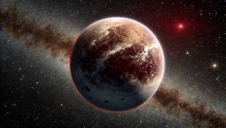
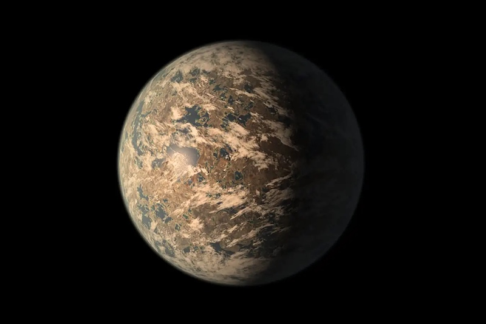
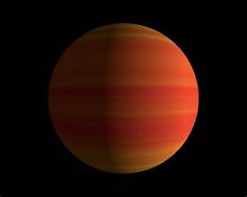
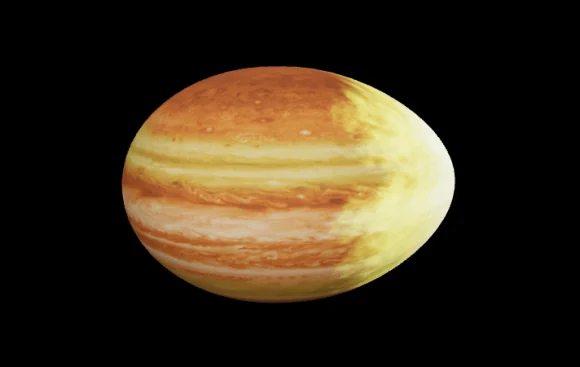

ROCKY WORLDProxima Centauri b
About 4.24 light-years away
One of the closest known exoplanets. It orbits within its star's habitable zone, but its actual conditions remain uncertain.
Discover more →EXPLORE THE UNIVERSE
Exoplanets are planets that orbit stars outside our solar system. They come in different sizes, shapes, and conditions. Some may have conditions suitable for life. Explore these distant worlds and discover the mysteries of our universe.
BEYOND EARTH. BEYOND IMAGINATION.
ABOUT EXOPLANETS
An exoplanet is a planet located outside our solar system. Instead of orbiting our Sun, it travels around another star.
Some exoplanets are rocky like Earth, while others are enormous gas giants. Scientists study them to learn how planets form and whether other worlds could support life.
Learn more from NASA →From small rocky planets to giant worlds.
They orbit stars beyond our solar system.
Scientists search for potentially habitable worlds.

EXPLORE DISTANT WORLDS
Meet fascinating planets discovered beyond our Sun.

ROCKY WORLDAbout 4.24 light-years away
One of the closest known exoplanets. It orbits within its star's habitable zone, but its actual conditions remain uncertain.
Discover more →
EARTH-SIZEDAbout 40 light-years away
A roughly Earth-sized planet in the TRAPPIST-1 system. Scientists are investigating its atmosphere.
Discover more →
GAS GIANTAbout 50 light-years away
Discovered in 1995, this planet helped transform the search for planets around Sun-like stars.
Discover more →
HOT WORLDRoughly 1,400 light-years away
A hot Jupiter that orbits very close to its star, exposing it to extreme temperatures.
Discover more →Planet pictures are artistic visuals, not actual photographs of these distant worlds.

THE JOURNEY CONTINUES
Every discovery brings us closer to understanding our place in the cosmos.